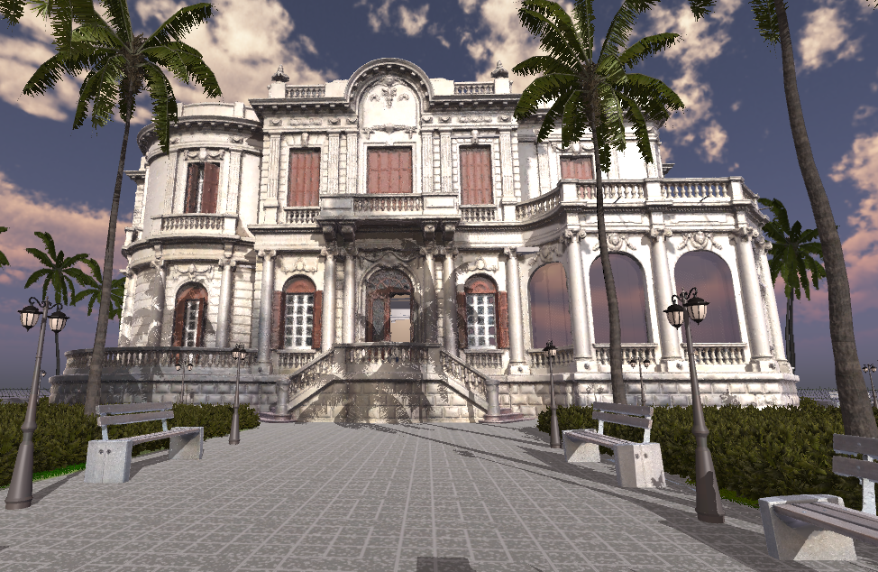
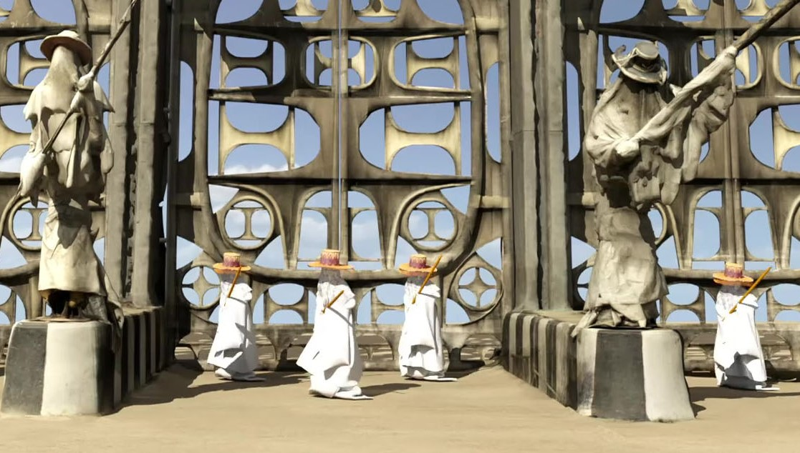

-

Design and Implementation of an Interactive Virtual Library based on its Physical Counterpart
Christina-Georgia Serghides, George Christoforides, Nikolas Iakovides, Andreas Aristidou
Virtual Reality Journal, Springer, Volume 28, article number 124, June 2024 This paper explores the creation of a digital replica of a physical Library, using photogrammetry and 3D modelling. A Virtual Reality (VR) platform was developed to immerse users in a virtual library experience, which can also serve as a community and knowledge hub. A perceptual study was conducted to understand the current usage of physical libraries, examine the users’ experience in VR, and identify the requirements and expectations in the development of a virtual library counterpart. Five key usage scenarios were implemented, as a proof-of-concept, with emphasis on 24/7 access, functionality, and interactivity. A user evaluation study endorsed all its key attributes and future viability.
-

Digitizing Traditional Dances Under Extreme Clothing: The Case Study Of Eyo
Temi-Ami Williams, Christina-Georgia Serghides, Andreas Aristidou
Journal of Cultural Heritage (JcH), Volume 67, pp. 145–157, February 2024
This work examines the challenges of capturing movements in traditional African masquerade garments, specifically the Eyo masquerade dance from Lagos, Nigeria. By employing a combination of motion capture technologies, the study addresses the limitations posed by "extreme clothing" and offers valuable insights into preserving cultural heritage dances. The findings lead to an efficient pipeline for digitizing and visualizing folk dances with intricate costumes, culminating in a visually captivating animation showcasing an Eyo masquerade dance performance.
-

Virtual Library: From Theory to Reality
Christina-Georgia Serghides, Stavroulla Pitta, Elena Diomidi Parpouna, Andreas Aristidou
In Proceedings of the 29th Panhellenic Conference of Academic Libraries, A.U.TH, Thessaloniki, Greece, November 27 - 30, 2023
- © Copyright Christina-Georgia Serghides. All rights reserved.